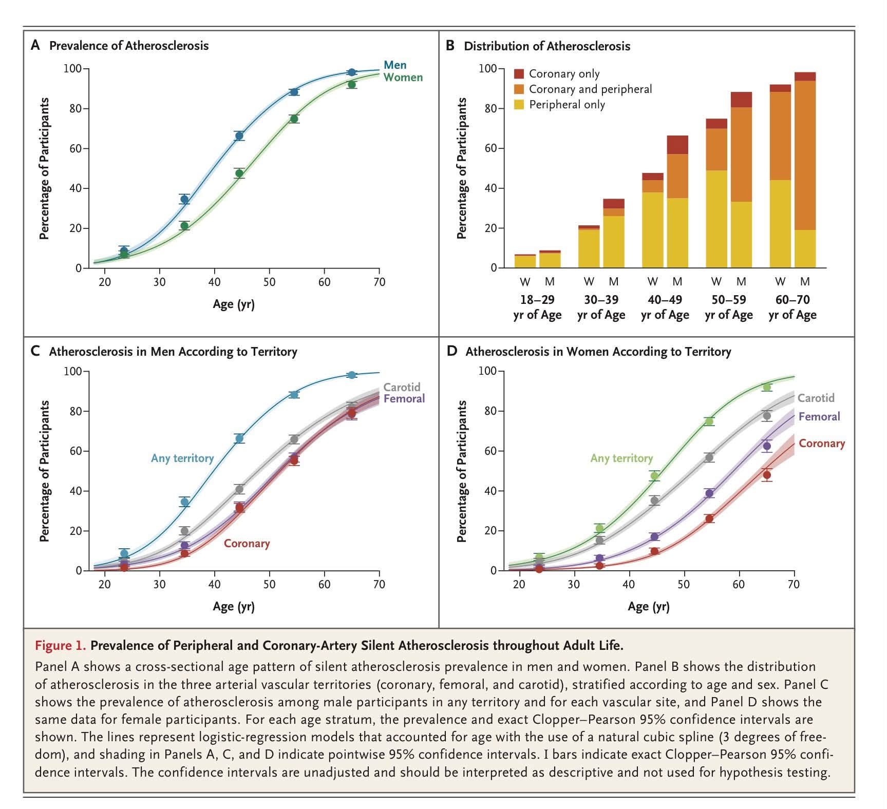

Atherosclerosis, the build-up of fatty plaque in artery walls, does not begin in the heart. A study discussed in the group found that plaque tends to accumulate first in the arteries of the neck (carotid) and the legs (femoral), in people's 20s, 30s and 40s, well before it shows up in the coronary arteries.1 That is why imaging the neck and leg arteries, or simply checking leg blood flow, can reveal disease that a heart-only scan might miss.
Three tools come up repeatedly. Carotid ultrasound can be read in two ways: as carotid intima-media thickness (CIMT, the thickness of the artery wall) or as carotid plaque burden (cPB, how much actual plaque is present). The ankle-brachial index (ABI) is a bedside measurement of blood pressure in the leg relative to the arm. Together they help describe where plaque sits and how widespread it is, which in turn says something about future risk.
Members do not fully agree on how useful each test is. This summary lays out what the posts say, who said it, and where the evidence is thin or contested. It is a summary of group discussion, not medical advice.
Why look at the neck and legs at all?
Plaque starts early and silently
The REACT study, published in the New England Journal of Medicine and shared by Louis Nervegna, used 3D carotid and femoral ultrasound plus coronary CT angiography in 16,808 adults aged 18 to 70 from Denmark and Spain, none with known cardiovascular disease.2 The findings were striking:
- Silent atherosclerosis was already present in 8.7% of men and 6.7% of women aged 18-29.2
- By ages 30-39 it was found in 34.6% of men and 21.3% of women.2
- Overall, 57% of participants had plaque.2
- By ages 60-70, only 1.9% of men and 8.1% of women had no detectable plaque in any of the three territories examined.2
A second point from the same study is the gap between predicted risk and actual disease. A young person can have a very low ten-year risk score while the disease process has already started; in REACT the high-risk SCORE2 category had only 1.9% sensitivity for detecting silent atherosclerosis.2 The quoted conclusion was that, rather than waiting for ten-year risk to become high, the priority should be keeping risk factors favourable throughout life: optimal blood pressure, low exposure to atherogenic lipoproteins, normal glucose metabolism, healthy waist circumference, a healthy diet, regular activity and no smoking.2
Show data
| Men | Women | |
|---|---|---|
| Aged 18–29 | 8.7% | 6.7% |
| Aged 30–39 | 34.6% | 21.3% |

An earlier post summarising a video about the same line of research made a similar argument: because plaque forms predominantly in the neck and legs in the 20s to 40s, a coronary calcium score can miss the early stages while disease grows silently.1
Why a coronary calcium score of zero is not the whole story
Coronary artery calcium (CAC) scoring measures calcified plaque in the heart arteries only. Young and early plaque is often soft and non-calcified, so the scan cannot see it. In REACT, among participants aged 30-39 who had coronary plaque on CT angiography, 41.8% of men and 48.4% of women had a calcium score of zero.2 In a Danish registry of 23,759 patients with symptoms suggestive of coronary disease, 54% had a CAC of zero, and half of those with symptomatic blockages had a zero score.7
There is a related nuance about what calcium means. Louis argues that a high CAC predicts risk mainly because calcified plaque is a proxy for the amount of dangerous soft plaque, since calcium develops from soft plaque over a long time; he considers an obsession with lowering the score misguided and says randomized outcome trials are needed.8 Gokhan Can explains that the Agatston score is not a true calcium volume: it weights area by a stepwise density factor from 1 to 4, so denser, more stable plaque on statin treatment can raise the number without meaning the disease is worsening.9
Carotid ultrasound: plaque burden versus CIMT
What each measures
CIMT measures the combined thickness of the inner two layers of the carotid wall. Carotid plaque burden (cPB) instead measures the plaque itself, both soft and calcified. Louis's position is that CIMT tends to reflect blood-pressure and age-related thickening of the wall rather than plaque alone, which is why he says most cardiologists do not use or recommend it, whereas cPB reflects the actual plaque.6
The cPB versus CAC mortality study
The study behind this view was a prospective cohort of about 5,700 people without symptoms, followed for a median of 12.4 years, during which 901 (16%) died. After adjusting for risk factors and medication, both cPB and CAC were significantly associated with all-cause mortality: the fully adjusted hazard ratio per trend was 1.23 (95% CI 1.16-1.32) for cPB and 1.15 (1.08-1.23) for CAC.34 Progression of cPB over time was also associated with mortality.4 The post described ultrasound as cheap and safe because it uses sound rather than radiation, and suggested that anyone who has never had a carotid ultrasound may wish to show the study to their doctor.34
Louis's advice is that when doing carotid ultrasound to assess risk, cPB is a much better test than CIMT, and that if there is a choice, to pick cPB or both.4 In a later edit he noted that people kept asking where to get it, and named two providers that offer plaque burden, one of them as part of its CIMT test.4
Two cautions are worth keeping in mind. The outcome studied was all-cause mortality, not heart attacks specifically, and the comparison is with CAC in a population without symptoms. These are one cohort's findings as relayed in the group, not a head-to-head trial of screening strategies.
CIMT as a tracking tool
Other posts treat CIMT more favourably as a way to monitor change, which shows the group's views are not uniform:
- Gokhan summarised the Bale and Doneen approach (lifestyle counselling, regular CAC and CIMT imaging and biomarker testing, statin-based lipid control often with ezetimibe or niacin, systolic blood pressure under 120, low-dose aspirin, insulin sensitizers and anti-inflammatories). In the 2016 community-based paper, the median time to the last CIMT was 3.0 years and the post reports a 52.7% decrease in maximum CIMT at two years.10
- Dr. Ford Brewer's CIMT at age 57 showed an "artery age" of 73; over about two years he took low-dose rosuvastatin, added omega-3 from salmon and niacin, switched his blood-pressure drug from an ARB to an ACE inhibitor and lost 10 pounds, and reports a fall of more than 20 years in artery age.11 Louis, sharing the same story, described it as a single self-reported case in a video from a clinic that also sells services and supplements.12
- A keto practitioner reshared by Gokhan chose a radiation-free CIMT test over CT angiography because of a decade of very high LDL and high Lp(a); he says it can detect soft plaque but needs a highly trained operator, and that it gives a baseline for follow-up.13
The group has not settled whether CIMT or plaque burden is the better number to chase. What the posts do agree on is that a baseline carotid scan can show whether plaque exists in a place that is cheap and safe to image.
What the evidence says about changing carotid plaque
Many group posts use carotid thickness or plaque as the outcome in trials. They vary a lot in quality.
Diet and lifestyle trials
- CORDIOPREV (2021, 1,002 patients with prior coronary disease): a Mediterranean diet rich in extra virgin olive oil lowered carotid thickness by 0.027 mm at five years and 0.031 mm at seven years, while the low-fat diet produced no change; maximum plaque height also fell more with the Mediterranean diet. Roughly 25% fewer recurrent major cardiovascular events were reported, even though everyone was on standard drugs and average LDL was below 90 mg/dL.1415 A follow-up analysis linked higher neutrophil counts to thicker carotid walls and more plaques, and found the Mediterranean diet lowered neutrophils over 5-7 years.16
- PREDIMED sub-study: in 164 people with complete data, carotid IMT progressed by 0.052 mm on the control diet but regressed by 0.084 mm with a Mediterranean diet plus 30 g/day of nuts (P=0.024); the olive-oil group did not show regression.17
- DIRECT-Carotid: a two-year trial comparing low-fat, Mediterranean and low-carbohydrate diets, cited by Louis as showing that major weight loss (for example 30 pounds) can regress carotid atherosclerosis.1819
- Louis lists six human randomized diet trials in which plaque regressed (Lifestyle Heart Trial, STARS, SCRIP, PREDIMED, CORDIOPREV and DISCO), noting shared themes of produce, legumes, whole grains, nuts, olive oil and fish and limits on refined foods, butter, fatty red meat and heavy alcohol.20 He also notes the Esselstyn data are not from randomized trials.18
Drugs and lipid lowering
Gokhan's ranking of interventions puts statins, PCSK9 inhibitors and ezetimibe at the top for regressing or stabilising plaque, with high-dose EPA and pioglitazone fairly good, and several supplements as promising but needing rigorous imaging trials.21 Most of that trial evidence is measured in the coronary arteries, not the neck. A meta-analysis of 31 intravascular ultrasound studies (4,997 patients) linked LDL below 80 mg/dL and HDL above 45 mg/dL to maximal regression, and each 1% reduction in percent atheroma volume to a 20% lower risk of major cardiac events.22 YELLOW-III, which added a PCSK9 inhibitor to high-dose statin, reported a 4.4% fall in total atheroma volume and over 30% thicker fibrous caps in six months at an LDL of roughly 30-40 mg/dL.2324
On the biology of why LDL matters in the neck arteries too, a cross-sectional study of more than 8,000 people not on lipid drugs found that carotid IMT and plaque rose once cumulative LDL exposure (age times LDL-C) reached about 6,000 mg-year/dL, after endothelial dysfunction began above 4,000 and smooth-muscle dysfunction above 5,000.25

Supplements and other agents: small or preliminary evidence
These posts report carotid or femoral findings, but most come from small studies or are not outcome trials:
- Centella asiatica (gotu kola): Louis flagged, as needing larger trials, a supplement-company summary of 60 mg three times daily with a 30% harder carotid plaque after 12 months and, in a femoral-artery study, 63% harder plaque with no size increase versus 23% growth in controls.26 A related summary describes small studies combining it with pine bark extract.27
- Nattokinase: a 1,062-participant clinical study reported that 10,800 FU/day improved lipids, carotid IMT and plaque size, while 3,600 FU/day did not.2829
- Pomegranate juice: a review cited CIMT reductions of up to 35% over a year in carotid stenosis patients versus a 10% rise in controls.30 Louis finds it promising but notes that larger trials were never done.31
- Lutein: in a 144-person trial, 20 mg of lutein lowered carotid IMT by 0.035 mm and with lycopene by 0.073 mm over 12 months, but the commentary stresses a large trial of lutein plus zeaxanthin did not reduce cardiovascular death.32
- Vitamin K2: a randomized trial discussed by Gokhan slowed calcification but did not reduce total plaque, and the video's author warned this could even be unhelpful because calcium acts like a stabilising scar.33
- L-carnitine: Louis highlighted a six-month trial in metabolic syndrome in which supplements increased carotid plaque stenosis, with TMAO suspected as the mechanism.34
Evidence quality varies widely here, and the group's own admins describe several of these as needing larger imaging trials.21
What plaque in the neck is made of
Plaque in the carotid arteries can be studied directly when it is surgically removed, and two research threads appear in the group. A JCI Insight study found large clonal populations of mutated cells in carotid plaques but not in healthy arteries, suggesting plaques grow by clonal expansion.35 In a 2024 New England Journal of Medicine study, 304 patients undergoing carotid endarterectomy had their plaque analysed; polyethylene was detected in 58.4% and those patients had a hazard ratio of 4.53 for heart attack, stroke or death during roughly 34 months of follow-up.36 A separate small, preliminary American Heart Association presentation found about 50 times more micronanoplastics in carotid plaque than in plaque-free arteries but could not prove causation.37 Louis stresses that this research is early stage.36
Separately, a trial summary shared by Gokhan found intensive treatment of gum disease slowed carotid artery thickening in otherwise healthy people.38
Peripheral artery disease and the ankle-brachial index
What PAD means
Peripheral artery disease (PAD) is atherosclerosis in the arteries that supply the limbs, most commonly the legs. In a Danish cohort of 4.2 million adults shared by Louis, one in five people over 40 developed PAD in their lifetime. Within a year of diagnosis 16% had died, 8% had a major amputation and 21% needed revascularization; within five years 40% had died and over 10% had lost a limb.5 The post stresses that PAD signals a high overall atherosclerotic burden, often including the coronary and carotid arteries, and that it is underdiagnosed and undertreated, partly because symptoms are mistaken for ageing or arthritis.5
Warning signs
Louis confirmed that restricted blood flow to the legs, most commonly from PAD, can make hair on the shins, ankles, feet and toes stop growing, because follicles depend on a steady blood supply, while noting that the viral picture's claim was exaggerated. He lists cold feet, leg pain on walking, numbness, slow-healing wounds and skin colour changes as reasons to seek medical review.39
The ankle-brachial index
The ABI is the ankle systolic blood pressure divided by the highest systolic reading from the arms, and the group describes it as a simple way to estimate a meaningful leg-artery blockage at home.1 The posts do not give cut-off values, so readers should ask their clinician how to measure and interpret it.
Supplements studied in PAD
Two small trials in PAD patients were shared, both focused on walking distance rather than events: a six-month double-blind pilot of a flavanol-rich cocoa drink in 44 older adults found a 42.6 m better six-minute walk distance than placebo, with the authors saying larger studies are needed40; and a six-month trial of nicotinamide riboside improved walking distance while placebo and the nicotinamide riboside plus resveratrol group declined.41
Nuances, controversies and misconceptions
- Is plaque shape or size what matters? The DISCHARGE secondary analysis (1,745 patients, 3.5 years) found high-risk plaque features on CT predicted events about as strongly as obstructive disease (about 3.8 times higher risk), and both together about 8.8 times, with the c-statistic improving from 0.70 to 0.75.42 Heart attacks often come from plaques that are not tightly blocking the artery, which is why imaging plaque rather than only stenosis matters.42
- Calcium is not always bad news. Both Louis and Gokhan describe calcification as a stabilising response, not the dangerous part, and say statins can convert soft plaque to calcified plaque.89 Louis also describes arterial calcification, by analogy with breast-implant calcification, as the end result of an inflammatory damage response that walls off damaged tissue.43
- Mixed views on CIMT. One admin calls it unhelpful for predicting heart attacks while members and other admins use it for baselines and trends.61013
- Surrogate versus outcome. Many supplement results are changes in a measurement (thickness, plaque volume), not fewer heart attacks, and the lutein and vitamin K2 posts both make this point.3233
- Endothelium first? Gokhan notes Dr. Vladimir Subbotin's hypothesis that atherosclerosis starts with endothelial injury, and in his view this is compatible with lowering LDL.44 Oxidized LDL, inflammation and foam-cell formation are among the mechanisms the group cites for LDL causing plaque.45
Show data
| Relative risk (log scale) | 95% CI | |
|---|---|---|
| High-risk plaque features, no blockage | 3.8 | – |
| High-risk plaque plus obstructive disease | 8.8 | – |
What this means for you
- Plaque is common even in the 30s and 40s, and a ten-year risk score can miss it. The group's admins suggest discussing imaging with a doctor rather than relying on risk scores alone.2
- A zero coronary calcium score is not a clean bill of health, especially in younger people, women or those with symptoms.27
- Louis recommends asking about carotid plaque burden ultrasound, ideally alongside or instead of CIMT, and suggests showing the cPB study to your doctor if you have never had a carotid scan.46
- A baseline scan is most useful when repeated on a consistent protocol; the CIMT users in the group value it for follow-up.13
- If you notice cold feet, leg pain when walking, numb feet or sores that do not heal, raise it with your doctor, who may check your ABI.139
- The levers with the best group-cited evidence for plaque are lowering LDL (statins, PCSK9 inhibitors, ezetimibe), a Mediterranean-style diet with nuts and olive oil, and major weight loss where relevant.14171821
- Treat single-supplement claims as preliminary until large trials with clinical outcomes exist.21
Frequently asked questions
Is carotid ultrasound better than a coronary calcium scan?
They answer different questions. In one 12-year cohort of about 5,700 asymptomatic people, carotid plaque burden predicted all-cause mortality slightly better than CAC (hazard ratios 1.23 versus 1.15).3 CAC cannot see non-calcified plaque, and ultrasound uses no radiation.24
Should I get a CIMT or a plaque burden test?
Louis recommends plaque burden over CIMT, or both if possible, because he considers CIMT a poor predictor of heart attack.46 Others in the group have used CIMT as a baseline.13
Can carotid plaque shrink?
Trials of Mediterranean diets, weight loss and lipid-lowering drugs report regression or reduced progression of carotid thickness or plaque.14171821 Supplement evidence is more preliminary.2628
Does having PAD mean I have heart disease too?
PAD is described in the group as a marker of widespread atherosclerosis, with many patients also having coronary and carotid disease, and a high risk of cardiovascular events.5
How do I check for leg artery blockage at home?
The group describes the ankle-brachial index: the ankle systolic pressure divided by the highest arm systolic pressure.1 Ask your doctor how to interpret the result.